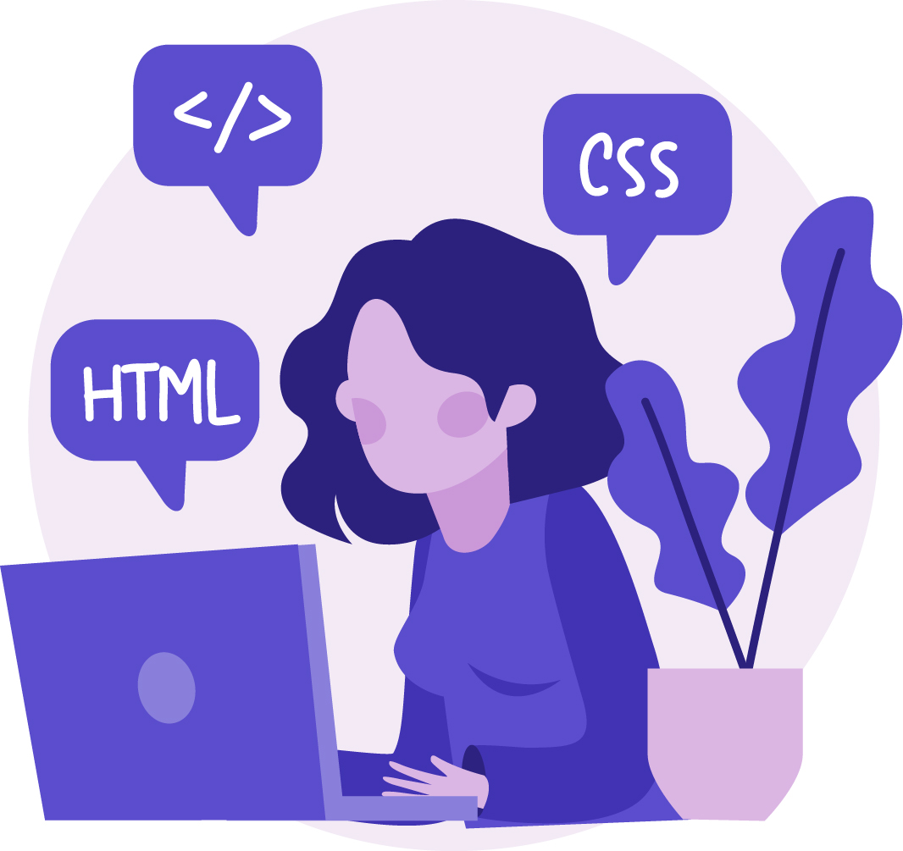

Carol Manfredini iniciou seus estudos em 2010 quando ingressou no Colégio Técnico da UNESP Bauru, onde se formou 3 anos depois no ensino médio com habilitação em informática.
Após finalizar o ensino médio, ingressou na Universidade do Sagrado Coração em Bauru (atual Unisagrado) no curso de design.
Carol sempre se identificou com artes, desde pequena e acabou voltando para essa área após seu período no colégio técnico. A graduação de design foi escolhida por achar que não teria aptidão para trabalhar com programação. Porém, em 2013 ela ingressou no mercado de TI e nunca mais saiu. Atuou com diversos produtos de diversas frentes de negócios, várias tecnologias e atualmente está migrando da área de programação para UX Design.
Veja abaixo as experiências profissionais e habilidades que conquistou ao longo de sua carreira.
Experiência
A knife bolster is the thick section between the handle and the blade, and it strengthens the knife, and gives better balance and control. However, there is much disagreement on whether or not it is necessary.
Formação
Forged knives are stronger and retain their edge longer than stamped knives, which have more flexible blades. In the case of Wusthof, their forged knives go through 40 different steps in their factory, where the laser-cut knives go through 14 steps. Also, their forged knives include a bolster, which balances the knife and protects fingers, although bolsters can also be added to laser-cut knives. Laser-cut stamped knives can be of excellent quality too, however, and they are more economically priced.
Habilidades
Always wash them by hand with hot, soapy water. Never drop them in with a sinkful of dirty dishes, or run them through a dishwasher, which will not only bang them together, but damage the blade through excessive heating.
Certificações
The more you can spend, the better, but there are some less expensive options, such as Victorinox, which also make Swiss Army Knives. The blades are very sharp, and well-made for the price.